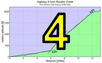

|  |  |
| pl | # | name | team | cat | time | mph | fph | %median |
|---|---|---|---|---|---|---|---|---|
| 1 | 129 | Lisa Penzel | The Brown Zone | 45+ | 25:30 | 19.95 | 1200 | 121.76 |
| 2 | 113 | Ginger Kroft | Western Wheelers | 40+ | 26:48 | 18.99 | 1142 | 115.86 |
| 3 | 305 | Amy Cameron | Sr's & Mr's of No Mercy | 30+ | 26:53 | 18.93 | 1138 | 115.50 |
| 4 | 146 | Lynn Sestak | The Brown Zone | 50+ | 27:04 | 18.80 | 1131 | 114.72 |
| 5 | 215 | Laura Hipp | Western Wheelers | 4 | 27:30 | 18.50 | 1113 | 112.91 |
| 6 | 8 | Janet Martinez | Sr's & Mr's of No Mercy | 27:33 | 18.47 | 1111 | 112.70 | |
| 7 | 79 | Lisa Emmerich | Sr's & Mr's of No Mercy | 50+ | 28:13 | 18.03 | 1084 | 110.04 |
| 8 | 500 | Mary Ellen Allen | Sr's & Mr's of No Mercy | 45+++ | 28:59 | 17.55 | 1056 | 107.13W |
| 8 | 422 | Sandra King | Team Fremont FFBC p/b Chipotle | 40+ | 28:59 | 17.55 | 1056 | 107.13 |
| 10 | 408 | Julie Colwell | Team Colwell | 40+ | 30:04 | 16.92 | 1018 | 103.27 |
| 11 | 404 | Sugar Brown | The Brown Zone | Brown | 30:17 | 16.80 | 1010 | 102.53 |
| 12 | 91 | Hannah Hausman | Hausbert | 20+ | 31:03 | 16.39 | 986 | 100.00 |
| 13 | 514 | Magdalena Novotna | El Camino Tri Club | 40+ | 31:36 | 16.10 | 968 | 98.26 |
| 14 | 50 | Alison Chaiken | Sr's & Mr's of No Mercy | 50+ | 32:18 | 15.75 | 947 | 96.13 |
| 15 | 440 | Darlene Stevenson | 40+ | 33:56 | 14.99 | 902 | 91.50 | |
| 16 | 312 | Andrea Ivan | Silicon Valley Triathlon | 37:23 | 13.61 | 819 | 83.06 | |
| 17 | 423 | Nina Komlik | 45+ | 42:58 | 11.84 | 712 | 72.27 |
| pl | # | name | team | cat | time | mph | fph | %median |
|---|---|---|---|---|---|---|---|---|
| 1 | 64 | Tracy Colwell | Team Colwell | 40+ | 21:52 | 23.27 | 1399 | 117.72 |
| 2 | 212 | Clark Foy | Western Wheelers | 45+ | 21:58 | 23.16 | 1393 | 117.18 |
| 3 | 120 | Rob Manchester | 35+ | 22:12 | 22.92 | 1378 | 115.95 | |
| 4 | 438 | Kieran Sherlock | Western Wheelers | 45+ | 22:43 | 22.40 | 1347 | 113.31 |
| 5 | 56 | Tim Clark | Low-Key | 45+ | 22:45 | 22.36 | 1345 | 113.14 |
| 6 | 38 | Rich Brown | The Brown Zone | 35+ | 22:55 | 22.20 | 1335 | 112.32 |
| 7 | 95 | Jared Hudson | SquadraSF | 30+ | 23:02 | 22.09 | 1329 | 111.75 |
| 8 | 59 | David Collet | 40+ | 23:14 | 21.90 | 1317 | 110.79 | |
| 9 | 517 | Kevin Susco | Webcor/Alto Velo | 50+ | 23:20 | 21.81 | 1311 | 110.32 |
| 10 | 230 | Carl Nielson | Sr's & Mr's of No Mercy | 50+ | 23:33 | 21.61 | 1299 | 109.30 |
| 11 | 509 | Kevin Keenan | Sr's & Mr's of No Mercy | 55+ | 23:38 | 21.53 | 1295 | 108.92 |
| 12 | 213 | Chris Furgiuele | Dolce Vita Cycling | 35+ | 23:44 | 21.44 | 1289 | 108.46 |
| 13 | 525 | John Novitsky | 50+ | 23:46 | 21.41 | 1288 | 108.30 | |
| 14 | 172 | Morgan Raines | Bike Trip/Symantec | 40+ | 23:51 | 21.33 | 1283 | 107.93 |
| 15 | 44 | Ciaran Byrne | Sr's & Mr's of No Mercy | 40+ | 23:54 | 21.29 | 1280 | 107.70 |
| 16 | 149 | Daryl Spano | San Jose Bike Club | 45+ | 23:55 | 21.27 | 1279 | 107.63 |
| 17 | 92 | Rich Hill | LGBRC | 45+ | 24:00 | 21.20 | 1275 | 107.25 |
| 18 | 239 | Dennis Van Hoof | Type 1 Diabetes | 35+ | 24:01 | 21.19 | 1274 | 107.18 |
| 19 | 421 | Mark King | IC3 Hammer Nutrition | 45+ | 24:04 | 21.14 | 1271 | 106.95 |
| 20 | 71 | Robby Cuthbert | Hausbert | 20+ | 24:15 | 20.98 | 1262 | 106.15 |
| 21 | 319 | Brian Schuster | Dolce Vita Cycling | 25+ | 24:19 | 20.92 | 1258 | 105.86 |
| 22 | 7 | James Porter | Western Wheelers | 3 | 24:21 | 20.90 | 1257 | 105.71 |
| 23 | 443 | H Two Brown | The Brown Zone | 50- | 24:27 | 20.81 | 1252 | 105.28 |
| 24 | 417 | Brian Haines | Taleo Racing | 35+ | 24:50 | 20.49 | 1232 | 103.65 |
| 25 | 410 | Bryn Dole | Blekko | 40+ | 24:54 | 20.43 | 1229 | 103.38 |
| 25 | 315 | Chris Mickelsen | 55+ | 24:54 | 20.43 | 1229 | 103.38 | |
| 27 | 412 | Rob Easley | Sr's & Mr's of No Mercy | 45+ | 24:55 | 20.42 | 1228 | 103.31 |
| 28 | 231 | Travis Retzer | Eden Bicycles | 4 | 25:02 | 20.32 | 1222 | 102.82 |
| 29 | 78 | Bill Dvorak | 55+ | 25:04 | 20.30 | 1221 | 102.69 | |
| 30 | 303 | Bill Brier | Team Fremont FFBC p/b Chipotle | 50+ | 25:10 | 20.22 | 1216 | 102.28 |
| 31 | 600 | Marcus Gosling | Webcor/Alto Velo | 3 | 25:14 | 20.16 | 1213 | 102.01 |
| 31 | 73 | J.D. Daniels | Eden Bicycles | 35+ | 25:14 | 20.16 | 1213 | 102.01 |
| 31 | 502 | Jamy Bacchus | Berkeley Bike Club | 40+ | 25:14 | 20.16 | 1213 | 102.01 |
| 34 | 518 | Murray Swanson | Pen Velo/Pomodoro | 45+ | 25:21 | 20.07 | 1207 | 101.54 |
| 35 | 75 | Giles Douglas | 35+ | 25:25 | 20.02 | 1204 | 101.27 | |
| 36 | 516 | John Richardson | Webcor/Alto Velo | 60+ | 25:30 | 19.95 | 1200 | 100.94 |
| 37 | 511 | Jay Kilby | Elkhorn Creek Racing | 45+ | 25:34 | 19.90 | 1197 | 100.68 |
| 38 | 145 | Takanobu Seimiya | Nikon Cycling Club | 40+ | 25:48 | 19.72 | 1186 | 99.77 |
| 39 | 161 | Alan Weatherall | San Jose Bike Club | 50+ | 25:51 | 19.68 | 1184 | 99.58 |
| 40 | 519 | Peter Tapscott | Webcor | 60+ | 25:52 | 19.67 | 1183 | 99.51 |
| 40 | 130 | Jim Perreira | 45+ | 25:52 | 19.67 | 1183 | 99.51 | |
| 42 | 99 | Peter Ingram | Ind. | 55+ | 25:54 | 19.64 | 1181 | 99.38 |
| 43 | 450 | Brad Fox | LGBRC | 30+ | 25:56 | 19.62 | 1180 | 99.26 |
| 44 | 503 | Oliver R. Barajas | Eden Bicycles | Junior | 25:59 | 19.58 | 1178 | 99.07 |
| 45 | 80 | Joe Fant | The Brown Zone | 50+ | 26:27 | 19.24 | 1157 | 97.32 |
| 46 | 159 | Plamen Velikov | SLACer | 26:46 | 19.01 | 1143 | 96.17 | |
| 47 | 31 | George Bonanto | Clydesdale | 26:50 | 18.96 | 1140 | 95.93 | |
| 48 | 428 | Russ McCrary | Sr's & Mr's of No Mercy | 50+ | 26:58 | 18.87 | 1135 | 95.45 |
| 49 | 45 | Pat Callahan | Quadzilla Racing | 40+ | 27:01 | 18.83 | 1133 | 95.28 |
| 50 | 83 | Dave Fitch | Pan y Agua | 70+ | 27:11 | 18.72 | 1126 | 94.69 |
| 51 | 505 | Mike Gregoire | Taleo Racing | 45+ | 27:12 | 18.71 | 1125 | 94.63 |
| 52 | 520 | Bruno Tourette | Palo Verde Velo | 35+ | 27:28 | 18.52 | 1114 | 93.72 |
| 53 | 521 | Bob Truel | Blekko | 45+ | 27:30 | 18.50 | 1113 | 93.60 |
| 54 | 135 | Mihai R. | 30+ | 27:32 | 18.48 | 1111 | 93.49 | |
| 55 | 84 | Stephen Fong | CyclePath Racing | 45+ | 27:40 | 18.39 | 1106 | 93.04 |
| 56 | 508 | Tom K. | Palo Verde Velo | 45+ | 27:47 | 18.31 | 1101 | 92.65 |
| 57 | 58 | Kevin Colagiovanni | Team DUD | 25+ | 27:57 | 18.20 | 1095 | 92.09 |
| 58 | 507 | Clay Heberly | 35+ | 28:05 | 18.12 | 1090 | 91.66 | |
| 59 | 401 | Nick Bellomo | Type 1 Diabetes | 30+ | 28:08 | 18.09 | 1088 | 91.49 |
| 60 | 65 | Kevin Comerford | Sr's & Mr's of No Mercy | 30+ | 28:17 | 17.99 | 1082 | 91.01 |
| 61 | 510 | Jonas Kellner | 35+ | 28:22 | 17.94 | 1079 | 90.74 | |
| 62 | 160 | Greg Watson | Palo Verde Velo | 45+ | 28:23 | 17.93 | 1078 | 90.69 |
| 63 | 442 | Matt Wittmann | 25+ | 28:28 | 17.87 | 1075 | 90.42 | |
| 64 | 100 | Tim Irvine | LGBRC | 40+ | 28:37 | 17.78 | 1069 | 89.95 |
| 65 | 77 | Frank Drobot | Western Wheelers | 60+ | 28:41 | 17.74 | 1067 | 89.74 |
| 66 | 81 | Rick Ferrell | Bike Trip/Symantec | 50+ | 28:47 | 17.68 | 1063 | 89.43 |
| 67 | 405 | Steve Bursley | Team Wild Hare | 45+ | 29:00 | 17.54 | 1055 | 88.76 |
| 68 | 26 | Bernard Bell | 50+ | 29:01 | 17.53 | 1055 | 88.71 | |
| 69 | 441 | Han Wen | GOM | 40+ | 29:28 | 17.27 | 1038 | 87.35 |
| 70 | 141 | Nico Sallembien | Silicon Valley Triathlon | 35+ | 29:29 | 17.26 | 1038 | 87.31 |
| 71 | 437 | Eddie Santos | 25+ | 30:50 | 16.50 | 992 | 83.48 | |
| 72 | 148 | Gregory P. Smith | 35+ | 31:05 | 16.37 | 984 | 82.81 | |
| 73 | 523 | Frank Viggiano | Palo Verde Velo | 55+ | 31:31 | 16.14 | 971 | 81.67 |
| 74 | 225 | Thomas Maslen | Western Wheelers | 50+ | 31:50 | 15.98 | 961 | 80.86 |
| 75 | 501 | Eric Anderson | 40+ | 31:52 | 15.97 | 960 | 80.78 | |
| 76 | 524 | Jeff Weitzman | Palo Verde Velo | 45+ | 32:34 | 15.62 | 940 | 79.04 |
| 77 | 323 | Tim Sutton | Plus 3 | 50+ | 32:52 | 15.48 | 931 | 78.32 |
| 78 | 513 | Rick Nolthenius | Santa Cruz Track Club | 55+ | 37:26 | 13.59 | 817 | 68.76 |
| 79 | 43 | Scott Byer | 45+ | 41:24 | 12.29 | 739 | 62.17 | |
| 80 | 63 | Skyler Colwell | Team Colwell | Junior | 44:13 | 11.51 | 692 | 58.21 |
| pl | # | name | team | cat | time | mph | fph | %median |
|---|---|---|---|---|---|---|---|---|
| 1 | 429 | Paul McKenzie | Sr's & Mr's of No Mercy | 55+ | 23:29 | 21.67 | 1303 | 109.61 |
| 406 | Paul Chuck | Sr's & Mr's of No Mercy | 55+ | |||||
| 2 | 32 | Dan Brehmer | SLACer | 45+ | 26:31 | 19.19 | 1154 | 107.08 |
| 33 | Winnie Lam Brehmer | SLACer | Stoker | |||||
| 3 | 12 | Will von Kaenel | LGBRC | 50+ | 27:00 | 18.84 | 1133 | 105.17 |
| 13 | Lynn von Kaenel | LGBRC | Stoker |
| pl | # | name | team | cat | time | mph | fph | %median |
|---|---|---|---|---|---|---|---|---|
| 1 | 6 | Bill Bushnell | Low-Key | It's Mostly The Bike | 16:32 | 30.77 | 1851 | 90.46 |
| pl | # | name | team | cat | time | mph | fph | %median |
|---|---|---|---|---|---|---|---|---|
| 1 | 129 | Lisa Penzel | The Brown Zone | 45+ | 37:42 | 10.19 | 3008 | 123.67 |
| 2 | 146 | Lynn Sestak | The Brown Zone | 50+ | 39:55 | 9.62 | 2841 | 116.80 |
| 3 | 305 | Amy Cameron | Sr's & Mr's of No Mercy | 30+ | 40:08 | 9.57 | 2826 | 116.17 |
| 4 | 113 | Ginger Kroft | Western Wheelers | 40+ | 40:23 | 9.51 | 2808 | 115.45 |
| 5 | 8 | Janet Martinez | Sr's & Mr's of No Mercy | 41:44 | 9.20 | 2717 | 111.72 | |
| 6 | 215 | Laura Hipp | Western Wheelers | 4 | 42:00 | 9.14 | 2700 | 111.01 |
| 7 | 500 | Mary Ellen Allen | Sr's & Mr's of No Mercy | 45+++ | 42:56 | 8.94 | 2641 | 108.59W |
| 8 | 408 | Julie Colwell | Team Colwell | 40+ | 45:10 | 8.50 | 2511 | 103.22 |
| 9 | 79 | Lisa Emmerich | Sr's & Mr's of No Mercy | 50+ | 45:19 | 8.47 | 2502 | 102.88 |
| 10 | 422 | Sandra King | Team Fremont FFBC p/b Chipotle | 40+ | 46:25 | 8.27 | 2443 | 100.44 |
| 11 | 404 | Sugar Brown | The Brown Zone | Brown | 48:10 | 7.97 | 2354 | 96.79 |
| 12 | 91 | Hannah Hausman | Hausbert | 20+ | 50:29 | 7.61 | 2246 | 92.35 |
| 13 | 514 | Magdalena Novotna | El Camino Tri Club | 40+ | 52:35 | 7.30 | 2157 | 88.66 |
| 14 | 50 | Alison Chaiken | Sr's & Mr's of No Mercy | 50+ | 55:16 | 6.95 | 2052 | 84.36 |
| 15 | 312 | Andrea Ivan | Silicon Valley Triathlon | 56:14 | 6.83 | 2017 | 82.91 | |
| 16 | 440 | Darlene Stevenson | 40+ | 56:35 | 6.79 | 2004 | 82.40 | |
| 17 | 423 | Nina Komlik | 45+ | 73:29 | 5.23 | 1543 | 63.45 |
| pl | # | name | team | cat | time | mph | fph | %median |
|---|---|---|---|---|---|---|---|---|
| 1 | 230 | Carl Nielson | Sr's & Mr's of No Mercy | 50+ | 30:42 | 12.51 | 3694 | 125.90 |
| 2 | 212 | Clark Foy | Western Wheelers | 45+ | 31:21 | 12.25 | 3617 | 123.29 |
| 3 | 64 | Tracy Colwell | Team Colwell | 40+ | 31:50 | 12.06 | 3562 | 121.41 |
| 4 | 38 | Rich Brown | The Brown Zone | 35+ | 32:01 | 11.99 | 3542 | 120.72 |
| 5 | 213 | Chris Furgiuele | Dolce Vita Cycling | 35+ | 32:20 | 11.88 | 3507 | 119.54 |
| 6 | 172 | Morgan Raines | Bike Trip/Symantec | 40+ | 32:31 | 11.81 | 3487 | 118.86 |
| 7 | 149 | Daryl Spano | San Jose Bike Club | 45+ | 32:35 | 11.79 | 3480 | 118.62 |
| 8 | 120 | Rob Manchester | 35+ | 32:36 | 11.78 | 3479 | 118.56 | |
| 9 | 7 | James Porter | Western Wheelers | 3 | 32:40 | 11.76 | 3471 | 118.32 |
| 9 | 59 | David Collet | 40+ | 32:40 | 11.76 | 3471 | 118.32 | |
| 11 | 438 | Kieran Sherlock | Western Wheelers | 45+ | 32:44 | 11.73 | 3464 | 118.08 |
| 12 | 71 | Robby Cuthbert | Hausbert | 20+ | 32:53 | 11.68 | 3449 | 117.54 |
| 13 | 56 | Tim Clark | Low-Key | 45+ | 32:57 | 11.65 | 3442 | 117.30 |
| 14 | 92 | Rich Hill | LGBRC | 45+ | 33:01 | 11.63 | 3435 | 117.06 |
| 15 | 517 | Kevin Susco | Webcor/Alto Velo | 50+ | 33:07 | 11.60 | 3424 | 116.71 |
| 15 | 319 | Brian Schuster | Dolce Vita Cycling | 25+ | 33:07 | 11.60 | 3424 | 116.71 |
| 17 | 44 | Ciaran Byrne | Sr's & Mr's of No Mercy | 40+ | 33:08 | 11.59 | 3423 | 116.65 |
| 18 | 95 | Jared Hudson | SquadraSF | 30+ | 33:16 | 11.54 | 3409 | 116.18 |
| 19 | 443 | H Two Brown | The Brown Zone | 50- | 33:54 | 11.33 | 3345 | 114.01 |
| 20 | 239 | Dennis Van Hoof | Type 1 Diabetes | 35+ | 34:11 | 11.23 | 3317 | 113.07 |
| 21 | 502 | Jamy Bacchus | Berkeley Bike Club | 40+ | 34:15 | 11.21 | 3311 | 112.85 |
| 22 | 412 | Rob Easley | Sr's & Mr's of No Mercy | 45+ | 34:28 | 11.14 | 3290 | 112.14 |
| 23 | 421 | Mark King | IC3 Hammer Nutrition | 45+ | 35:01 | 10.97 | 3238 | 110.38 |
| 24 | 303 | Bill Brier | Team Fremont FFBC p/b Chipotle | 50+ | 35:03 | 10.96 | 3235 | 110.27 |
| 25 | 518 | Murray Swanson | Pen Velo/Pomodoro | 45+ | 35:18 | 10.88 | 3212 | 109.49 |
| 25 | 509 | Kevin Keenan | Sr's & Mr's of No Mercy | 55+ | 35:18 | 10.88 | 3212 | 109.49 |
| 27 | 231 | Travis Retzer | Eden Bicycles | 4 | 35:26 | 10.84 | 3200 | 109.08 |
| 28 | 600 | Marcus Gosling | Webcor/Alto Velo | 3 | 35:44 | 10.75 | 3174 | 108.16 |
| 29 | 503 | Oliver R. Barajas | Eden Bicycles | Junior | 35:56 | 10.69 | 3156 | 107.56 |
| 30 | 145 | Takanobu Seimiya | Nikon Cycling Club | 40+ | 36:13 | 10.60 | 3131 | 106.72 |
| 31 | 511 | Jay Kilby | Elkhorn Creek Racing | 45+ | 36:29 | 10.53 | 3108 | 105.94 |
| 32 | 80 | Joe Fant | The Brown Zone | 50+ | 36:38 | 10.48 | 3096 | 105.51 |
| 33 | 78 | Bill Dvorak | 55+ | 36:56 | 10.40 | 3070 | 104.65 | |
| 34 | 73 | J.D. Daniels | Eden Bicycles | 35+ | 36:59 | 10.38 | 3066 | 104.51 |
| 35 | 315 | Chris Mickelsen | 55+ | 37:46 | 10.17 | 3003 | 102.34 | |
| 36 | 130 | Jim Perreira | 45+ | 37:51 | 10.15 | 2996 | 102.11 | |
| 37 | 81 | Rick Ferrell | Bike Trip/Symantec | 50+ | 38:16 | 10.03 | 2963 | 101.00 |
| 38 | 99 | Peter Ingram | Ind. | 55+ | 38:20 | 10.02 | 2958 | 100.83 |
| 39 | 410 | Bryn Dole | Blekko | 40+ | 38:39 | 9.94 | 2934 | 100.00 |
| 40 | 450 | Brad Fox | LGBRC | 30+ | 38:45 | 9.91 | 2926 | 99.74 |
| 41 | 516 | John Richardson | Webcor/Alto Velo | 60+ | 38:49 | 9.89 | 2921 | 99.57 |
| 42 | 510 | Jonas Kellner | 35+ | 38:50 | 9.89 | 2920 | 99.53 | |
| 43 | 525 | John Novitsky | 50+ | 38:55 | 9.87 | 2914 | 99.31 | |
| 44 | 75 | Giles Douglas | 35+ | 39:32 | 9.71 | 2868 | 97.77 | |
| 45 | 159 | Plamen Velikov | SLACer | 39:37 | 9.69 | 2862 | 97.56 | |
| 46 | 161 | Alan Weatherall | San Jose Bike Club | 50+ | 39:41 | 9.68 | 2858 | 97.40 |
| 47 | 428 | Russ McCrary | Sr's & Mr's of No Mercy | 50+ | 39:57 | 9.61 | 2839 | 96.75 |
| 48 | 519 | Peter Tapscott | Webcor | 60+ | 40:08 | 9.57 | 2826 | 96.30 |
| 49 | 442 | Matt Wittmann | 25+ | 41:09 | 9.33 | 2756 | 93.92 | |
| 50 | 135 | Mihai R. | 30+ | 41:27 | 9.26 | 2736 | 93.24 | |
| 51 | 521 | Bob Truel | Blekko | 45+ | 41:48 | 9.19 | 2713 | 92.46 |
| 52 | 401 | Nick Bellomo | Type 1 Diabetes | 30+ | 42:12 | 9.10 | 2687 | 91.59 |
| 53 | 77 | Frank Drobot | Western Wheelers | 60+ | 42:15 | 9.09 | 2684 | 91.48 |
| 54 | 31 | George Bonanto | Clydesdale | 42:27 | 9.05 | 2671 | 91.05 | |
| 55 | 45 | Pat Callahan | Quadzilla Racing | 40+ | 42:35 | 9.02 | 2663 | 90.76 |
| 56 | 508 | Tom K. | Palo Verde Velo | 45+ | 42:37 | 9.01 | 2661 | 90.69 |
| 57 | 520 | Bruno Tourette | Palo Verde Velo | 35+ | 42:47 | 8.98 | 2651 | 90.34 |
| 58 | 43 | Scott Byer | 45+ | 42:48 | 8.97 | 2650 | 90.30 | |
| 59 | 58 | Kevin Colagiovanni | Team DUD | 25+ | 43:08 | 8.90 | 2629 | 89.61 |
| 59 | 83 | Dave Fitch | Pan y Agua | 70+ | 43:08 | 8.90 | 2629 | 89.61 |
| 61 | 65 | Kevin Comerford | Sr's & Mr's of No Mercy | 30+ | 43:29 | 8.83 | 2608 | 88.88 |
| 62 | 505 | Mike Gregoire | Taleo Racing | 45+ | 43:43 | 8.78 | 2594 | 88.41 |
| 63 | 160 | Greg Watson | Palo Verde Velo | 45+ | 43:55 | 8.74 | 2582 | 88.01 |
| 64 | 405 | Steve Bursley | Team Wild Hare | 45+ | 44:22 | 8.66 | 2556 | 87.11 |
| 65 | 100 | Tim Irvine | LGBRC | 40+ | 44:45 | 8.58 | 2534 | 86.37 |
| 66 | 84 | Stephen Fong | CyclePath Racing | 45+ | 44:54 | 8.55 | 2526 | 86.08 |
| 67 | 507 | Clay Heberly | 35+ | 45:06 | 8.51 | 2514 | 85.70 | |
| 68 | 26 | Bernard Bell | 50+ | 45:44 | 8.40 | 2480 | 84.51 | |
| 69 | 437 | Eddie Santos | 25+ | 46:17 | 8.30 | 2450 | 83.51 | |
| 70 | 141 | Nico Sallembien | Silicon Valley Triathlon | 35+ | 47:15 | 8.13 | 2400 | 81.80 |
| 71 | 417 | Brian Haines | Taleo Racing | 35+ | 47:34 | 8.07 | 2384 | 81.25 |
| 72 | 441 | Han Wen | GOM | 40+ | 48:19 | 7.95 | 2347 | 79.99 |
| 73 | 225 | Thomas Maslen | Western Wheelers | 50+ | 50:42 | 7.57 | 2237 | 76.23 |
| 74 | 523 | Frank Viggiano | Palo Verde Velo | 55+ | 51:33 | 7.45 | 2200 | 74.98 |
| 75 | 501 | Eric Anderson | 40+ | 55:38 | 6.90 | 2038 | 69.47 | |
| 76 | 148 | Gregory P. Smith | 35+ | 56:29 | 6.80 | 2008 | 68.43 | |
| 77 | 323 | Tim Sutton | Plus 3 | 50+ | 56:52 | 6.75 | 1994 | 67.97 |
| 78 | 513 | Rick Nolthenius | Santa Cruz Track Club | 55+ | 58:09 | 6.60 | 1950 | 66.47 |
| 79 | 524 | Jeff Weitzman | Palo Verde Velo | 45+ | 59:25 | 6.46 | 1909 | 65.05 |
| 80 | 63 | Skyler Colwell | Team Colwell | Junior | 63:07 | 6.08 | 1797 | 61.24 |
| pl | # | name | team | cat | time | mph | fph | %median |
|---|---|---|---|---|---|---|---|---|
| 1 | 429 | Paul McKenzie | Sr's & Mr's of No Mercy | 55+ | 36:43 | 10.46 | 3089 | 105.27 |
| 406 | Paul Chuck | Sr's & Mr's of No Mercy | 55+ | |||||
| 2 | 32 | Dan Brehmer | SLACer | 45+ | 45:08 | 8.51 | 2513 | 94.47 |
| 33 | Winnie Lam Brehmer | SLACer | Stoker | |||||
| 3 | 12 | Will von Kaenel | LGBRC | 50+ | 51:06 | 7.51 | 2219 | 83.44 |
| 13 | Lynn von Kaenel | LGBRC | Stoker |
| pl | # | name | team | cat | time | mph | fph | %median |
|---|---|---|---|---|---|---|---|---|
| 1 | 6 | Bill Bushnell | Low-Key | It's Mostly The Bike | 21:18 | 18.03 | 5324 | 105.44 |